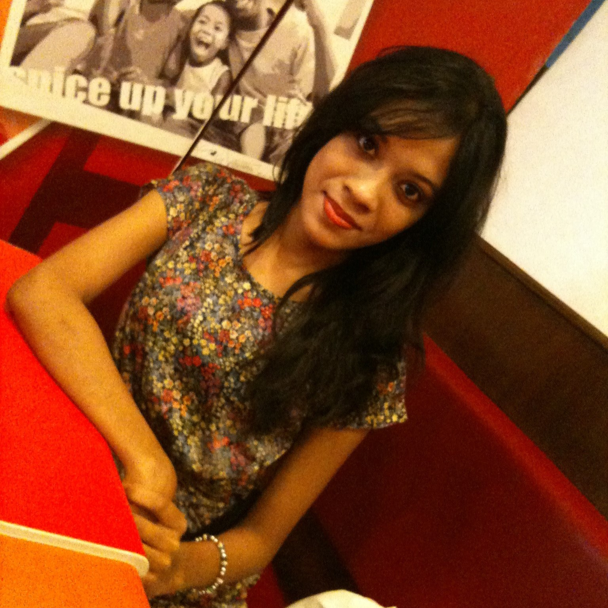

Arpa Barua Sumi
Website Developer

Bangladesh, 28 December
My name is Arpa. I'm studying Diploma of computing at Deakin College. This is my 2nd trimester. The city I was born in is called Chittagong. I'm very friendly and honest as a person.
I love working with computer. This is why I chose IT as my major. In the future I would love to develope different softwares for computer and mobile.
I would also love to contribute to the development of my country.
There are some really great tourist spots in Bangladesh one should visit. Three of them are as follows:
- Sundarbans
- Sundarbans is the home of the Royal Bengal Tiger. Its compact rain forests are criss crossed by a network of rivers and creeks. One finds here tides flowing in two directions in the
same creek and often tigers swimming across a river or huge crocodiles basking in the sun. Other wildlife in this region is cheetahs, spotted dears,
moneys, pythons, wild bears and hyenas. The forest is reachable by river from Khulna and Mongla. There are relaxing houses for
the guests to stay and enjoy the pure nature with all its charm and majesty.
- Cox's Bazar
- Cox's Bazar is a seaside town, a fishing port and district headquarters in Bangladesh. It is known for its wide and long sandy beach, which is considered by many as the world's longest
natural sandy sea beach. The beach in Cox's Bazar is an unbroken 125 kilometres (78 mi) sandy sea beach with a gentle slope. It is located 152 kilometres
(94 mi) south of the Chittagong Seaport. Cox's Bazar is also known by the name Panowa, whose literal translation means "yellow
flower". Its other old name was "Palongkee".
- St. Martin's Island
- It’s the country’s only coral island and it's beaches do actually match the hype. It also has more bungalow-style accommodation, which adds to the beach vibe. St Martin’s is home to a
friendly, tomorrow-never-comes population of around 7000, the majority of whom are Muslim, and live primarily off fishing, although the small amount of land
on the centre of the island is also farmed. The island is fairly small – about 6km in length and rarely more than 1km wide – so
it’s easy to navigate. Rickshaws are available, but you can also just walk around it from beach to beach. The area around the jetty,
on the northeast tip of the island, is called Narikeldia; there there are a few hotels and restaurants.
Trimester Two, 2015
This semester I'm studying 3 units. They are as follows:
- Introduction to Web Develpomennt
- Critical Thinking and Problem Solving
- Cloud Computing and Virtualization